BUGSY’S
SOCIAL CLUB
Steak house & sea food · Yaoundé
Un café le matin, une grande table le soir, un club la nuit.
Ouverture prochaineLe concept
Une adresse, trois temps
Au cœur du quartier Bastos, Bugsy’s réunit sous le même toit un café, un steak house et un club, dans l’esprit des clubs américains des années 40.
Le Café
Espresso, café de l’Ouest camerounais, petit-déjeuner d’affaires.
Le Restaurant
Grill et fruits de mer, relevés de poivre de Penja et de sauces maison.
Le Club
DJ sets funky, hip-hop et deep house : la salle du dîner devient la piste.
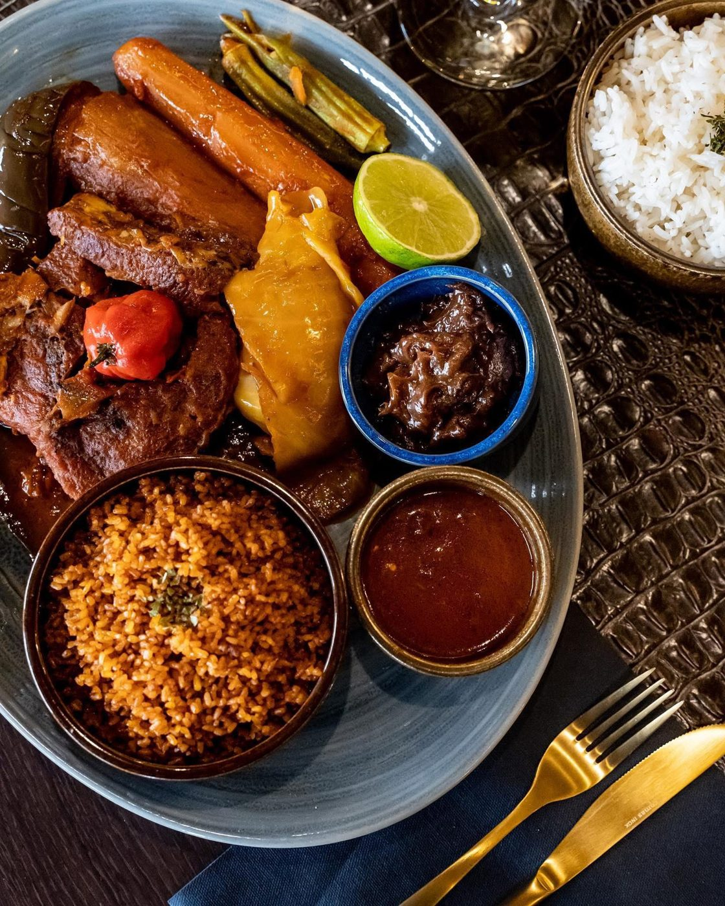
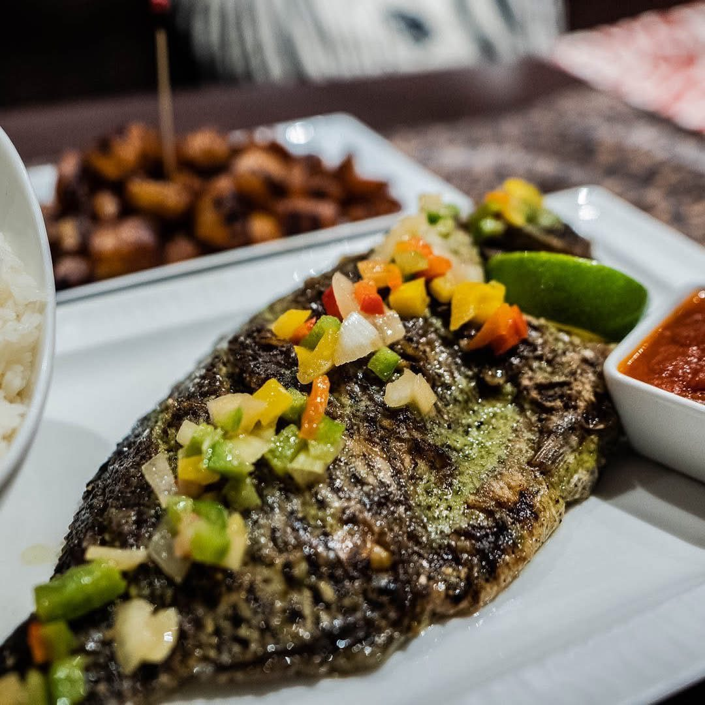
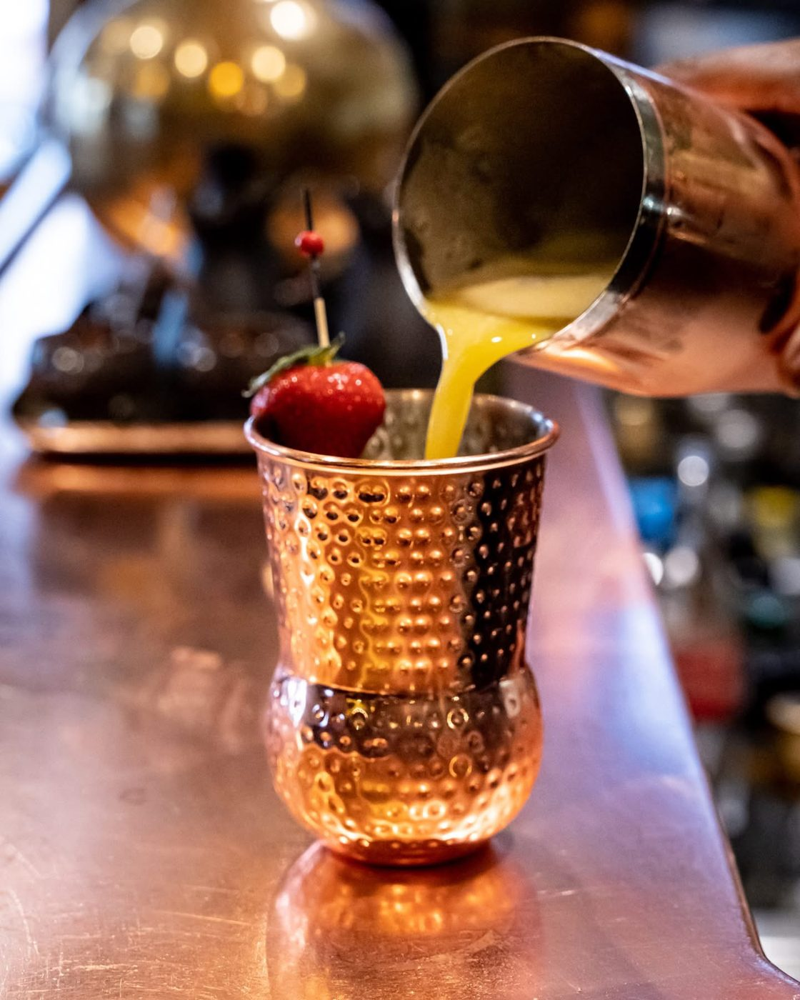
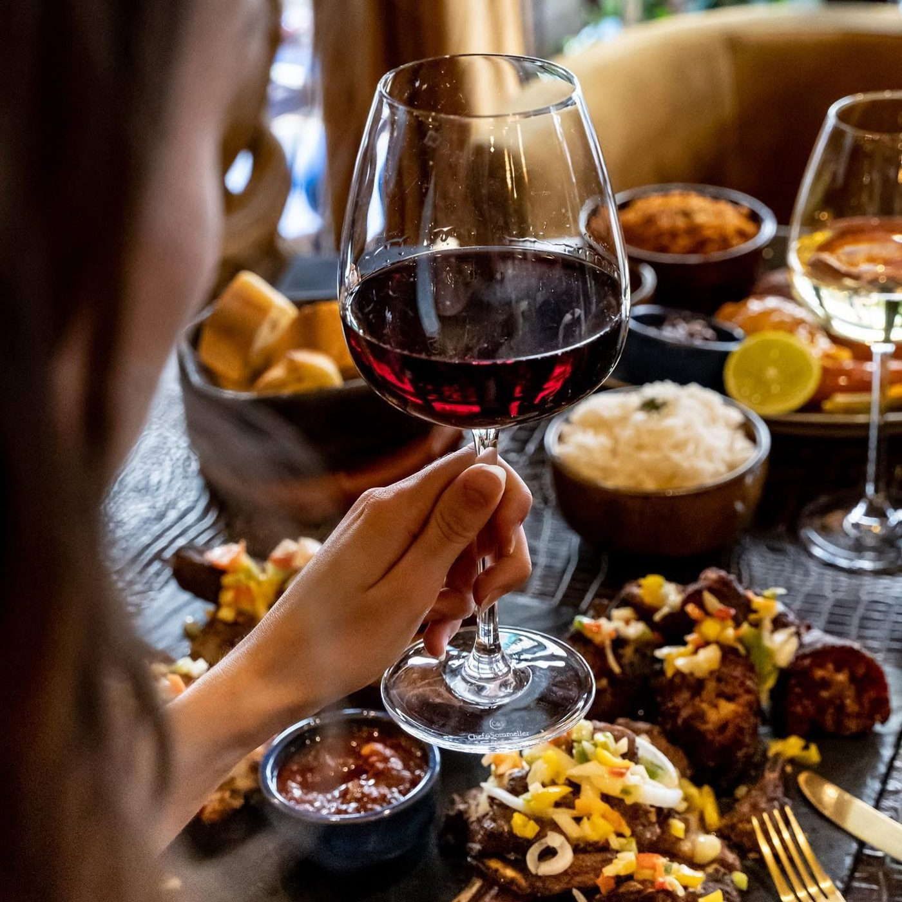
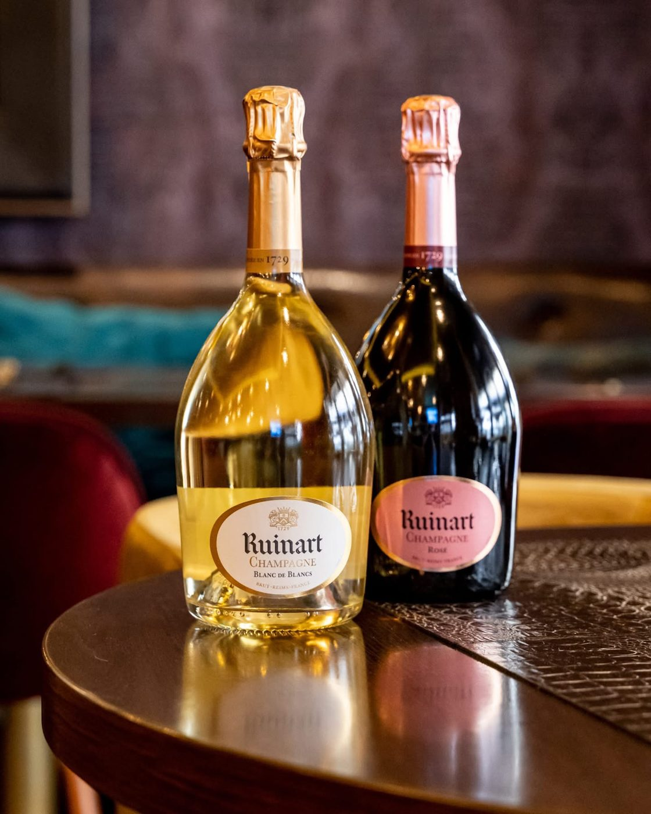
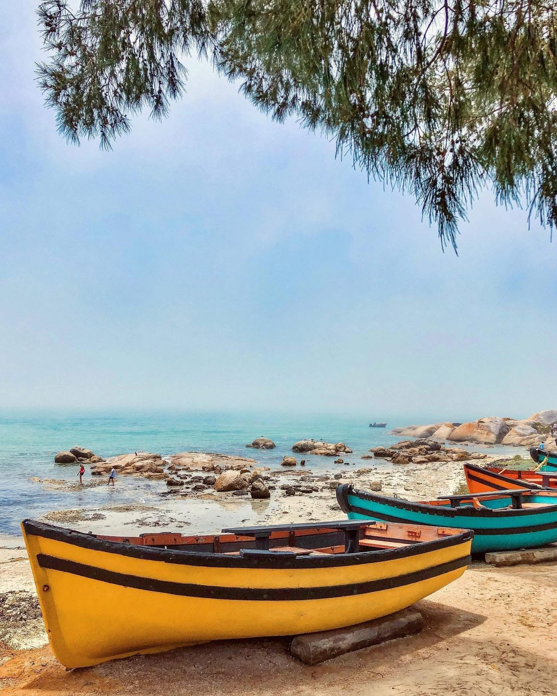
La carte
Steak house, sea food et classiques du monde
Le restaurant 12h – 23h
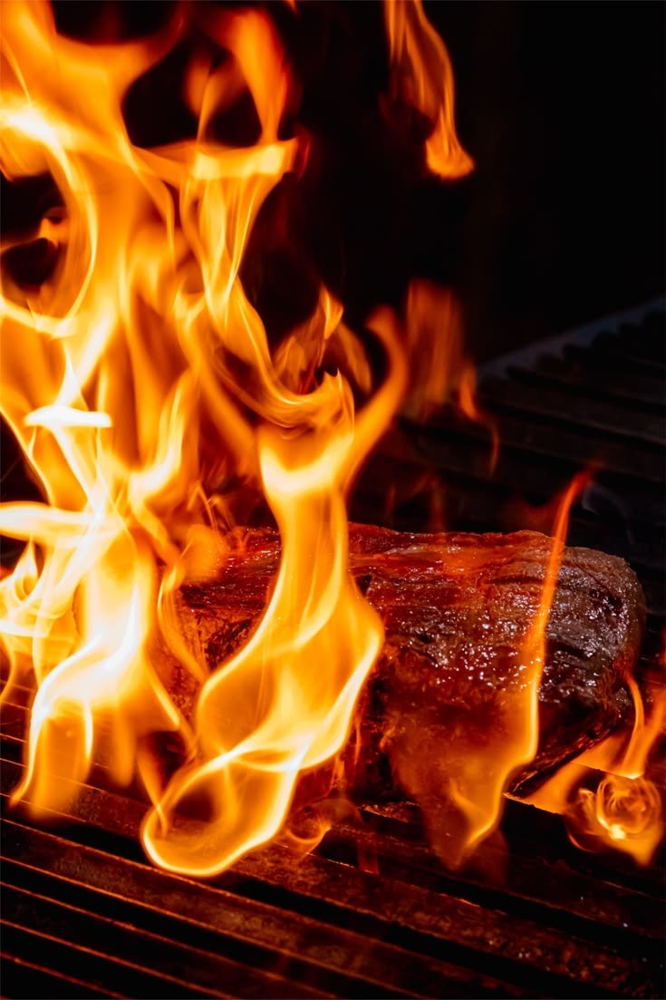
Bienvenue
Notre rituel, à l’arrivée et au départ
Rhum arrangé maisonoffertOffert à chaque convive
Pour commencer
Os à moelle rôti6 000Fleur de sel, pain grillé, persillade
Salade Bugsy’s7 000Avocat, crevettes de Kribi, mangue, vinaigrette passion
Soya4 500Brochettes de bœuf épicées au grill, oignons, piment
Le Steak House
Chaque pièce est servie avec son os à moelle rôti et la sauce Bugsy’s : herbes fraîches, njansang, poivre blanc de Penja · Aussi : béarnaise · mbongo
Côte de bœuf maturée, 1 kg45 000Pour deux, découpée en salle
Filet de bœuf, 250 g18 000
Entrecôte tranchée, 300 g15 000Servie en poêle, fleur de sel
Dibi d’agneau12 000Agneau braisé, oignons, moutarde
Le Sea Food
Les meilleurs produits de la mer, de Kribi et d’ailleurs
Plateau de fruits de mer55 000Pour deux : langouste, gambas, crevettes de Kribi, calamars
Langouste de Kribi grillée25 000Beurre au poivre blanc de Penja
Gambas flambées en salle12 000Beurre à l’ail et au gingembre frais
Poisson braisé entier12 000Bar ou capitaine, alloco, bâton de manioc
Classiques d’Afrique
Servis à l’assiette, comme en gastronomie
Ndolé aux crevettes9 000Arachides, crevettes, plantain mûr
Poulet DG9 000Plantains mûrs, carottes, haricots verts
Mafé, au choixdès 8 000Sauce à l’arachide, riz blanc · bœuf ou poulet 8 000 · agneau 9 500
Yassa, au choixdès 8 000Oignons confits au citron · poulet 8 000 · poisson 10 000 · crevettes 11 000
Capitaine au mbongo tchobi12 000Sauce noire aux épices, bâton de manioc
Classiques du monde
Amérique · Europe · Asie
Burger Bugsy’s9 500Bœuf maturé, cheddar affiné, oignons confits, frites maison
Tartare de bœuf au couteau9 500Piment doux, câpres, frites maison
Sole meunière16 000Beurre noisette, citron, pommes vapeur
Tataki de thon11 000Sésame, gingembre, sauce ponzu
Gambas au wok12 000Nouilles sautées, légumes croquants
Accompagnements
Frites maison · Alloco · Riz jollof · Miondo · Légumes grillés · Purée maison
L’accompagnement2 000
La pâtisserie française
Crêpe Suzette6 000Flambée au Grand Marnier, en salle
Mille-feuille5 000Crème vanille, caramel
Profiteroles5 000Glace vanille, chocolat chaud
Crème brûlée4 500Vanille ou bissap
Fondant au cacao du Cameroun5 000Cœur coulant, glace vanille
Le café, le bar et le club 8h – 4h
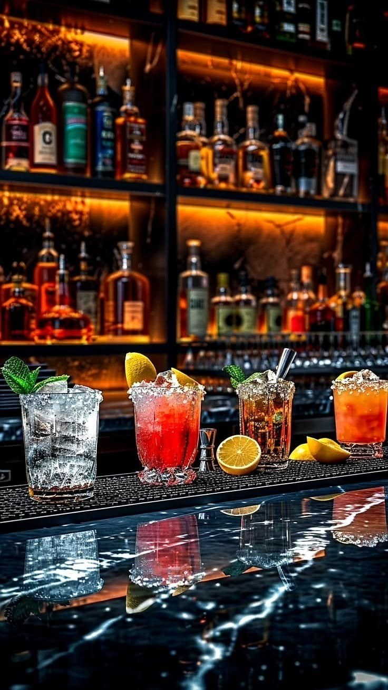
Le café · 8h – 11h
Espresso1 500
Café filtre de l’Ouest2 000
Cappuccino2 500
Toast avocat, œufs brouillés5 500
Petit-déjeuner Bugsy’s6 500Viennoiserie, jus pressé, boisson chaude
Cocktails signature
The Bugsy8 500Bourbon, sirop de bissap, angostura
Flamingo7 500Gin, passion, hibiscus, tonic
Penja Old Fashioned8 500Whisky, sirop au poivre de Penja, orange
Copper Mule7 000Vodka, gingembre frais, citron vert, timbale de cuivre
Gold Rush Espresso8 000Vodka, café de l’Ouest, liqueur de cacao
Bissap Royal9 000Sirop de bissap maison, champagne brut
Sans alcool
Foléré gingembre3 500
Citronnade menthe3 500
Mangue-passion pressé4 000
Copper Mule sans alcool4 500
La cave et la bière
Bordeaux, Bourgogne, Rhône, Champagne : carte des vins sur demande
Vin au verre5 000
Bouteille de vindès 25 000
Coupe de champagne12 000
Bière2 000
Le club · jeudi à samedi, 23h – 4h
Softs et glace inclus avec chaque bouteille · Entrée offerte aux clients du dîner
Champagne brut75 000
Champagne blanc de blancs110 000
Champagne rosé120 000
Vodka premium, 70 cl60 000
Whisky 12 ans, 70 cl70 000
Cognac VSOP, 70 cl85 000
Bouteilles de collection
Au salon ou au club
Dom Pérignon450 000Champagne millésimé, 75 cl
Petrussur demandePomerol, 75 cl
Lise Baccara Extra250 000Cognac, 70 cl
Prix en francs CFA, service compris · Allergènes sur demande · L’abus d’alcool est dangereux pour la santé
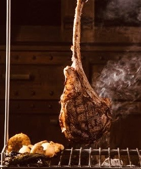
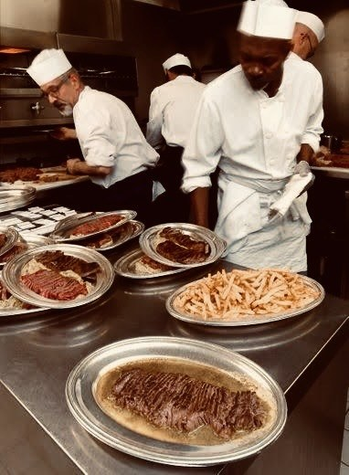
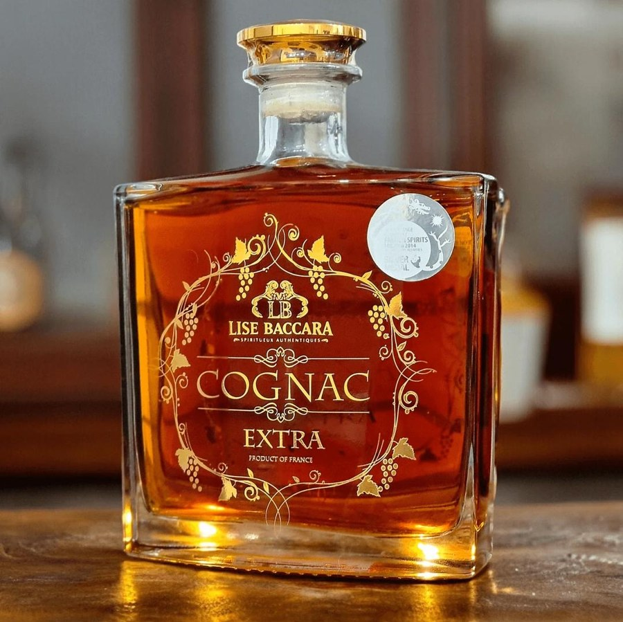
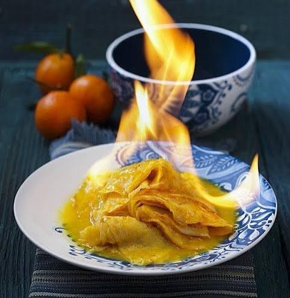
Le jazz
Le jazz en signature
Du soul jazz aux grooves africains, le Cameroun a donné à la musique quelques-unes de ses plus grandes voix, de Manu Dibango à Richard Bona. Chez Bugsy’s, on dîne au son d’un live, puis les platines prennent le relais.
Jeudis Soul Jazz · 20h – 23hSoul jazz et musiques africaines en live pendant le dîner, puis le DJ prend le relais.
Galerie tournantePeintres et sculpteurs camerounais aux murs, œuvres à vendre.
Vernissage · un mercredi par moisSoirée sur invitation autour de l’artiste exposé.
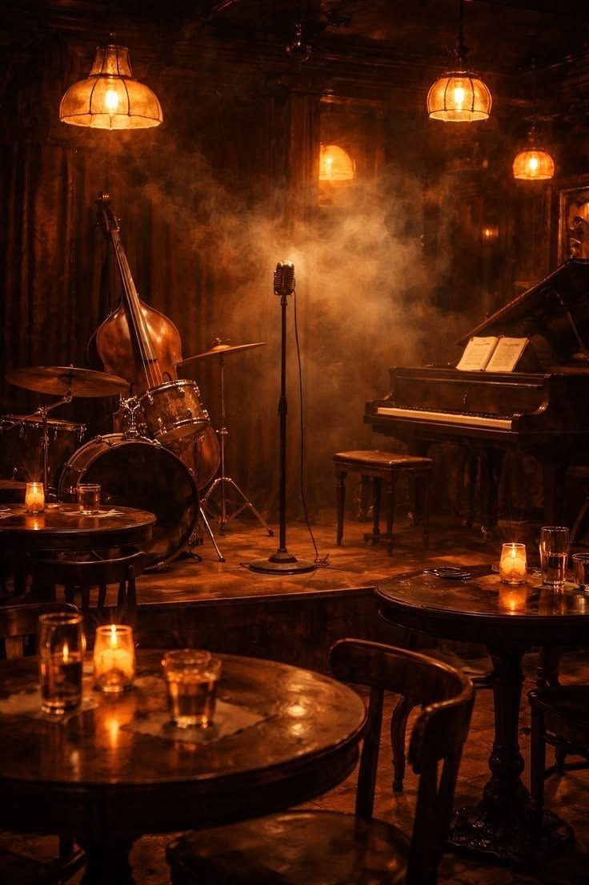
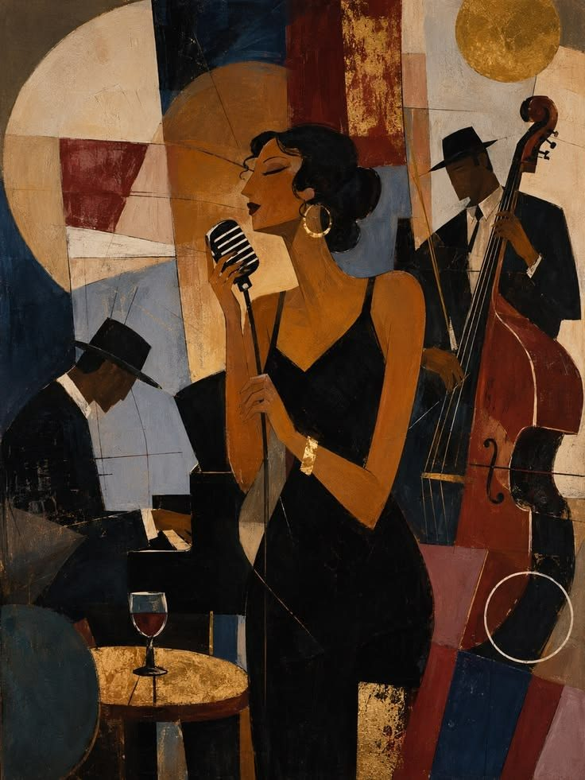
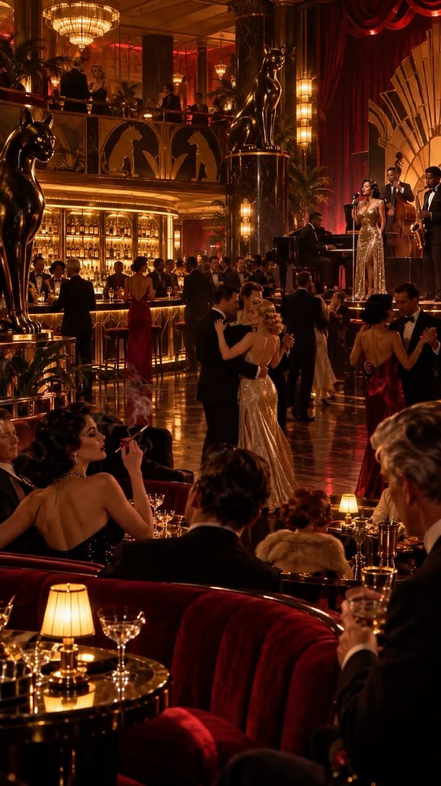
La galerie
Vernissages
Les toiles exposées aux murs de Bugsy’s. Une nouvelle exposition chaque trimestre, un vernissage un mercredi par mois.
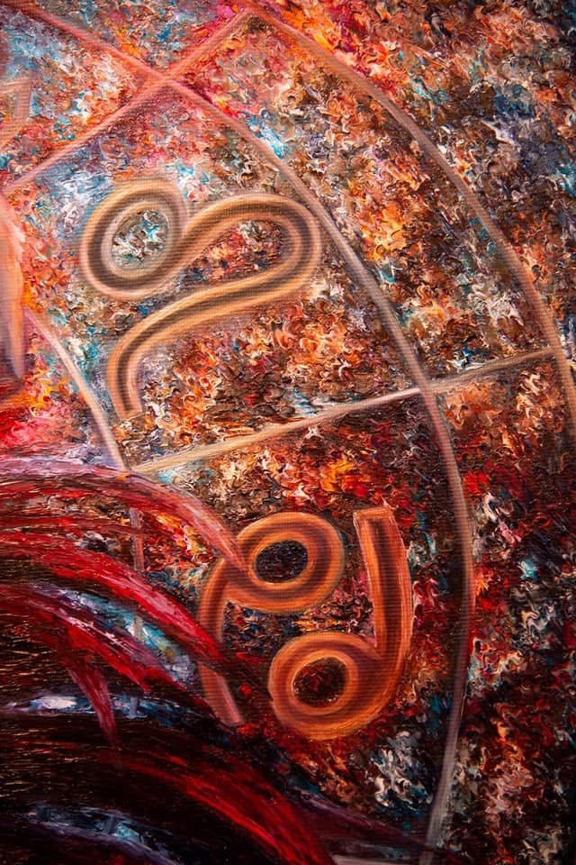
Le club
Jazz and Night Club
Du jeudi au samedi, de 23h à 4h : DJ sets funky, hip-hop et deep house, service bouteilles et entrée offerte aux clients du dîner.
L’école de danse
Danse et books
Le jour, la piste du club devient un studio. On y apprend, on y répète, et on y fait les images qui font connaître les danseurs.
- Afro
- Hip-hop
- Contemporain
- Salsa
- Street jazz
- Modern jazz
Cours · du lundi au jeudi, en journéeTous niveaux, du premier pas au danseur confirmé.
Books photoShootings pour les artistes et les compagnies : portraits, mouvement, scène.
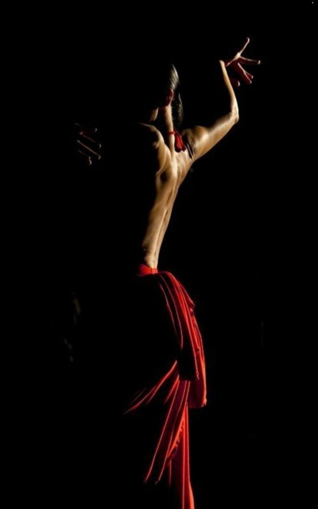
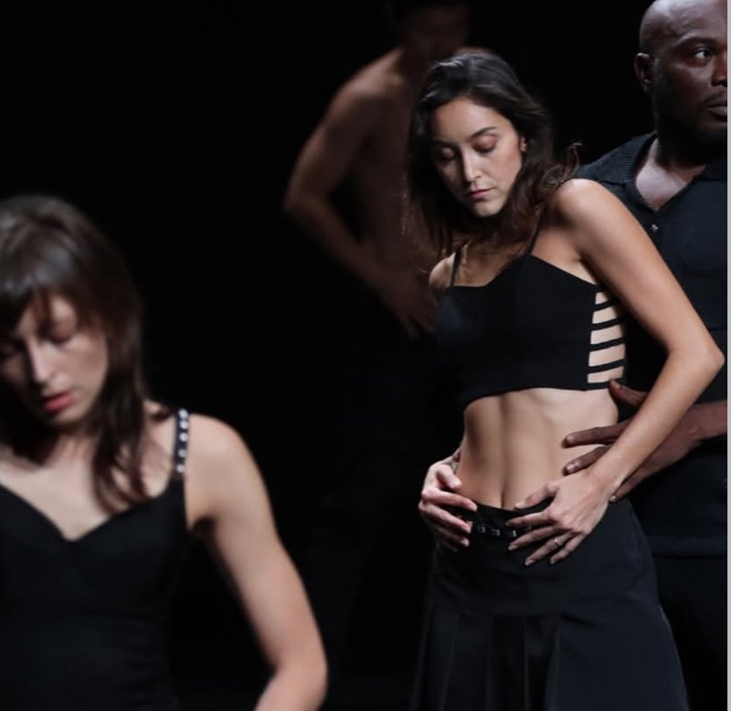
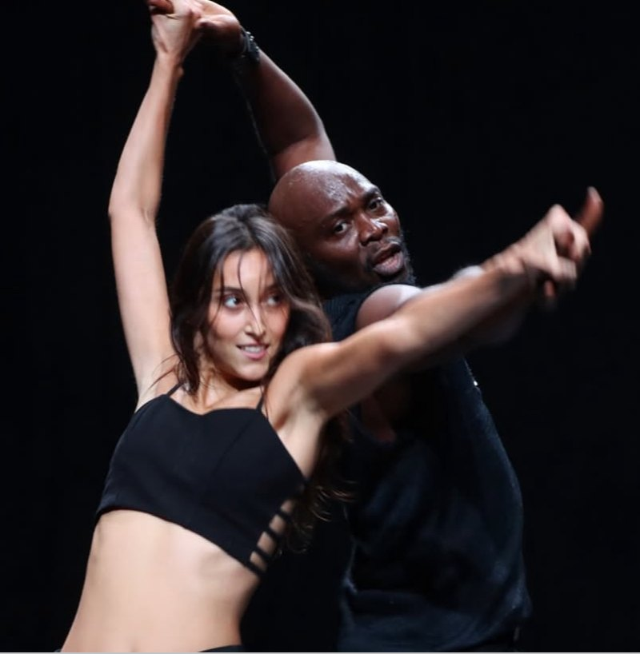
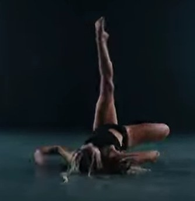
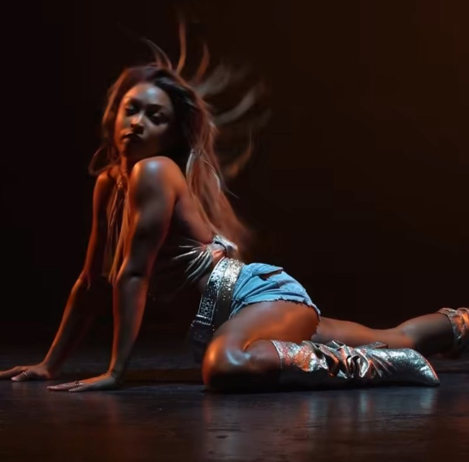
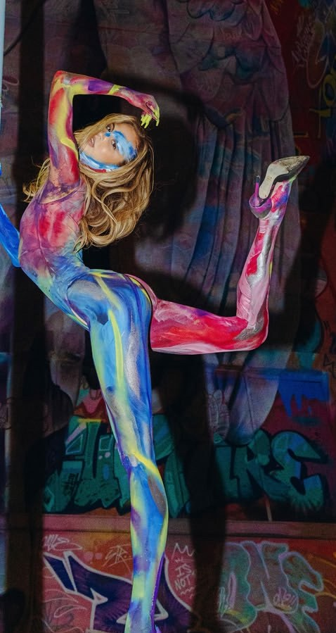
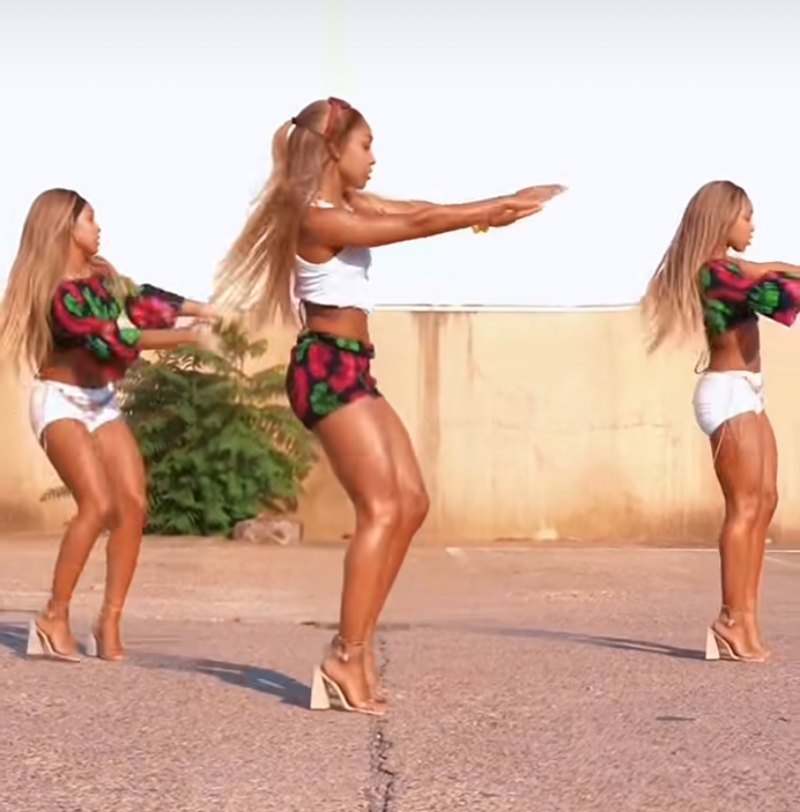
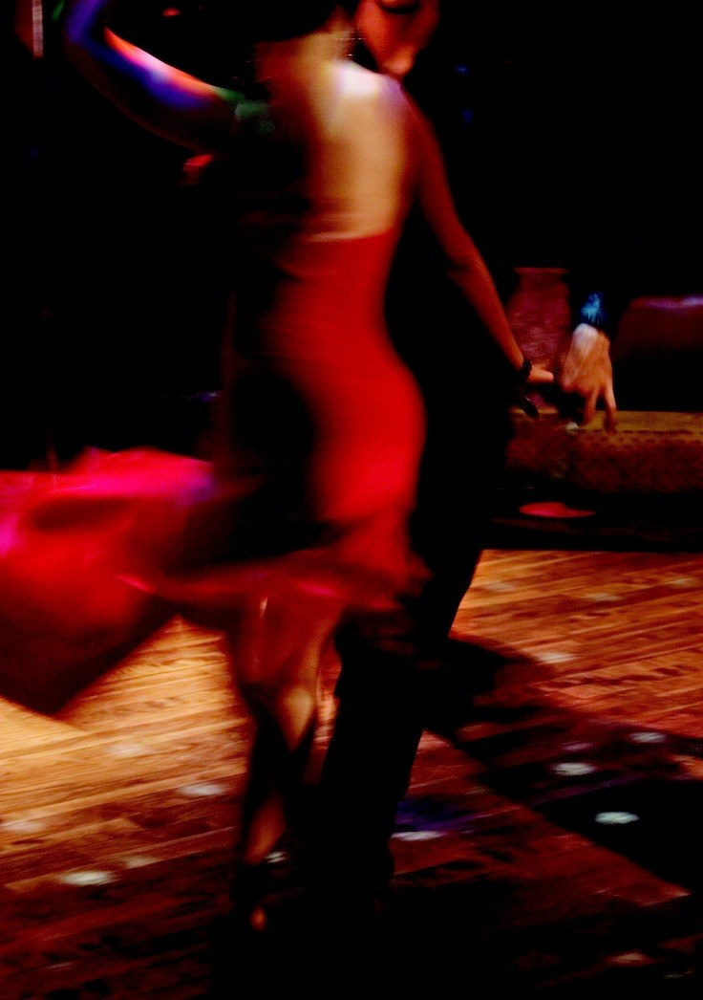
Membres
Le cercle Bugsy’s
Trois cartes pour les habitués du club. Les avantages de chaque niveau seront annoncés à l’ouverture.
Nous recrutons
Rejoins la maison
Tu aimes la gastronomie, le jazz et les belles nuits ? Bugsy’s prépare son ouverture et constitue son équipe.
Chef cuisinier
Steak house, sea food et classiques du monde
Serveurs et serveuses
Service en salle, accueil des membres, élégance
Barman ou barmaid
Cocktails signature, bouteilles de collection
Partenaires
Bugsy’s s’associe aux compagnies, aux festivals et aux maisons qui partagent sa vision de Yaoundé : la danse, le jazz et la création, au même endroit.
Devenir partenaireContact
Ouverture prochaine
Réservations, privatisations et cartes de membre : les coordonnées seront publiées ici très bientôt.
Bastos · Yaoundé · Cameroun
Fondé par Guy Erick Tamokwe